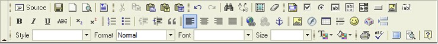

Toolbar
The Toolbar is the area in FCKeditor where you can activate most of the editor features. Each button in the toolbar access a different function. There are simple functions for basic text formatting and more advanced features like creation of links and tables.

The FCKeditor Toolbar
To use the buttons in the toolbar you must move your mouse pointer over the button. The button will highlight and a message with the information about the button function will appear. Click on the button to execute its function. With more experience you will have full control over all FCKeditor features and you won't have to read the description of the buttons. You will just use them intuitively.
Besides the toolbars buttons there are also toolbar combos (drop down boxes). The combos are the white areas with a little arrow on its side. They can be easily accessed by clicking on the white area or the little arrow. Once clicked the menu will expand so you can choose from one of its available options. To execute one of them, simply click on it.
Copyright © 2009, Robert Moorehouse